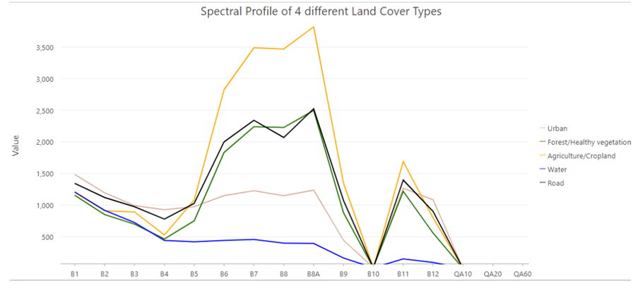
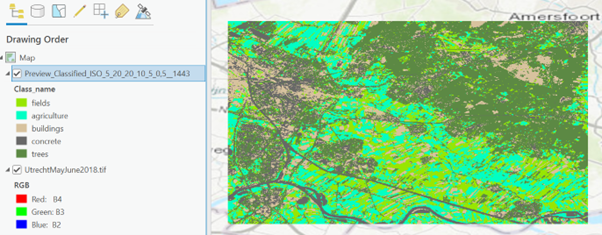
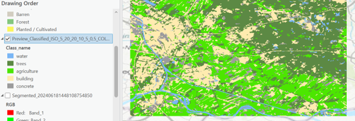
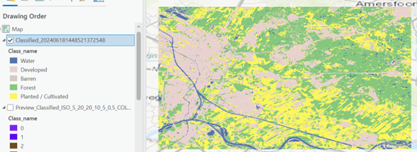
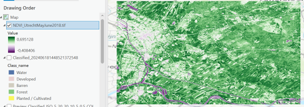

Remote Sensing - Land Cover Classification
This page showcases different land classification techniques, illustrated through detailed screenshots. These methods are essential for analyzing and categorizing land cover, offering unique insights into various landscapes. Here, you'll find examples of four distinct classification types: Unsupervised Pixel-Based, Unsupervised Object-Based, Supervised Object-Based, and NDVI. Additionally, an overview of spectral data is provided to give context to these classifications. All these maps were made using Sentinel satalite data that was processed in Arc GIS Pro.
Spectral Data:
Spectral data is used in remote sensing and land classification. It involves capturing and analyzing the electromagnetic spectrum reflected or emitted by objects on the Earth's surface. Satellite and aerial sensors capture data across various spectral bands, such as visible light (red, green, blue), near-infrared, and shortwave infrared. Each spectral band provides different information about the surface. Different materials reflect and absorb different wavelengths of light, creating unique spectral signatures that can be used to identify and classify land cover types. Each type of land cover, such as water, vegetation, and urban areas, has a distinct spectral signature. By analyzing these signatures, we can classify and map different land cover types. See here an example of the variablity of spectral profiles:
Unsupervised Pixel-Based Classification:
This method groups individual pixels into clusters based on their spectral properties without using any prior training data, the program runs itself. Advantages: Quick and easy to implement, requires no training data, and can reveal natural groupings in the data.
Unsupervised Object-Based Classification:
This technique first segments the image into meaningful objects or segments, then classifies these segments based on their spectral and spatial properties. Again, without using any prior data training. Advantages: Reduces the grainy effect seen in pixel-based methods and captures spatial patterns and object shapes.Quick and easy to implement, requires no training data, and can reveal natural groupings in the data.
Supervised Object-Based Classification:
Combines object-based segmentation with supervised learning, using labeled training data to classify the segmented objects. In this case the training was done manually, using several training points. Advantages: High accuracy due to the use of training data and spatial context, producing more visually coherent maps.
Normalized Difference Vegetation Index (NDVI):
NDVI is a widely-used index that measures vegetation health and density using remote sensing data. Advantages: Provides a clear and effective measure of vegetation density, useful for both environmental monitoring and agricultural assessments.
Consideration:
The supervised pixel based classification works best in my opinion. This type generated the most accurate results compared to unsupervised classification and was more precise than the object-based classification. Pixel-beased sometimes defines small areas as different types, which makes the map appear busier. In comparison, object based chooses more logical boundaries. Supervised classification gives more control over the categories and their reference spectral value than unsupervised giving a more accurate result. NDVI shows a more graduated map; therefore making it quite unclear what the boundaries are. This map is also different as the land is not grouped by cover type but rather just vegetation cover.